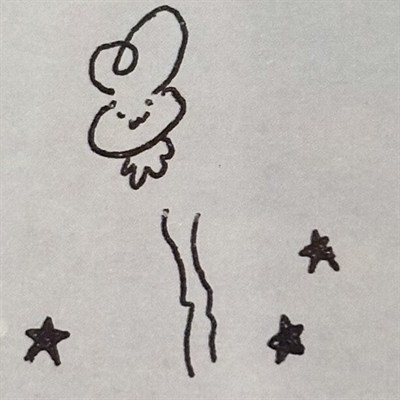

Song4u
cs专业学生，打过一些算法竞赛，想要把想法做成真正能跑起来的东西
关于我
我是一名计算机专业的学生，主要精力放在数据结构与算法、后端开发上。 平时喜欢刷题、做小工具，也喜欢把折腾的过程写成笔记。
这个网站是我的一块自留地，用来放学习笔记、正在学的东西，以及怎么联系到我。 如果你对其中任何一件事感兴趣，欢迎来聊。
学习笔记、项目记录，以及折腾各种工具的过程。

cs专业学生，打过一些算法竞赛，想要把想法做成真正能跑起来的东西
我是一名计算机专业的学生，主要精力放在数据结构与算法、后端开发上。 平时喜欢刷题、做小工具，也喜欢把折腾的过程写成笔记。
这个网站是我的一块自留地，用来放学习笔记、正在学的东西，以及怎么联系到我。 如果你对其中任何一件事感兴趣，欢迎来聊。